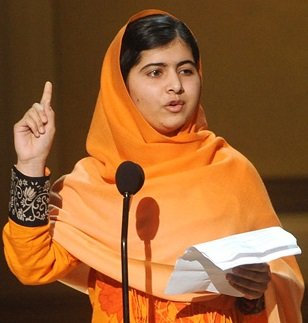

The goal of this program is to raise awareness of equal rights for girls. But it's really important to make them understand and believe that they only deserve the same rights. NOT MORE! NOT LESS! In this program they learn that their voices are important and that it should be heard even if they had to speak louder to get their voices heard and respected. In this program we try our best to encourage girls to follow their dreams.
Malala Yousafzai
Malala is born in 1997 in the Swat Village of Pakistan. Malala started noticing that women in her country were suppressed because of their gender. She started fighting for education equality. She felt that it was unfair that education for girls was seen as a privilege. She was determined to bring awarness and social change to education equality even after she survived an assassination attempt.